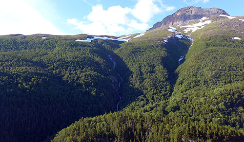
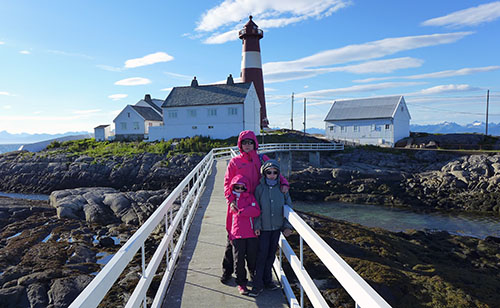
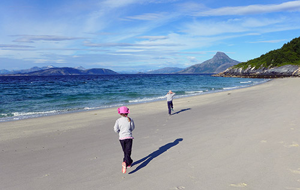
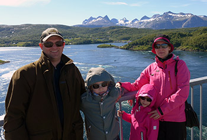

Matkalla Norjassa 2017
Junkerdal
Jylhiä vuoria, reheviä laaksoja, 20.8.2017
Ylitimme Norjan rajan Junkerdalin kohdalla. Vajaa tuntia aiemmin maisemat olivat alkaneet Ruotsin puolella muuttua vuoristomaiseksi. Ensimmäinen yli kilometrin korkuinen vuori aiheutti perheessämme suurta innostusta..
Tranoy
Majakka Norjanmeren rannalla, 21.8.2017
Tranoyn majakka sijaitsee Norjan luoteisosassa, Hamaroystä pohjoiseen Norjanmeren rannalla pienellä kalliosaarella. Se on ollut toiminnassa vuodesta 1864 lähtien..
Lofootit - Å
Tie päättyy - olemme perillä, 22.8.2017
Lofootit on saariryhmä Pohjois-Norjassa. Saarille on kiinteä tieyhteys mantereelta valtatie E10 pitkin. Tie kulkee saarten läpi siltojen ja tunneleiden kautta ja päättyy Moskenesøyan Å:ssa. Lofootit on pohjolan paratiisi..
Me
Norjan matka kesällä 2017 oli meidän perheemme ISO reissu. Se oli tärkeä monesta syystä ja kovin odotettu.

Copyright © Maarit Parkkonen, 18.12.2017